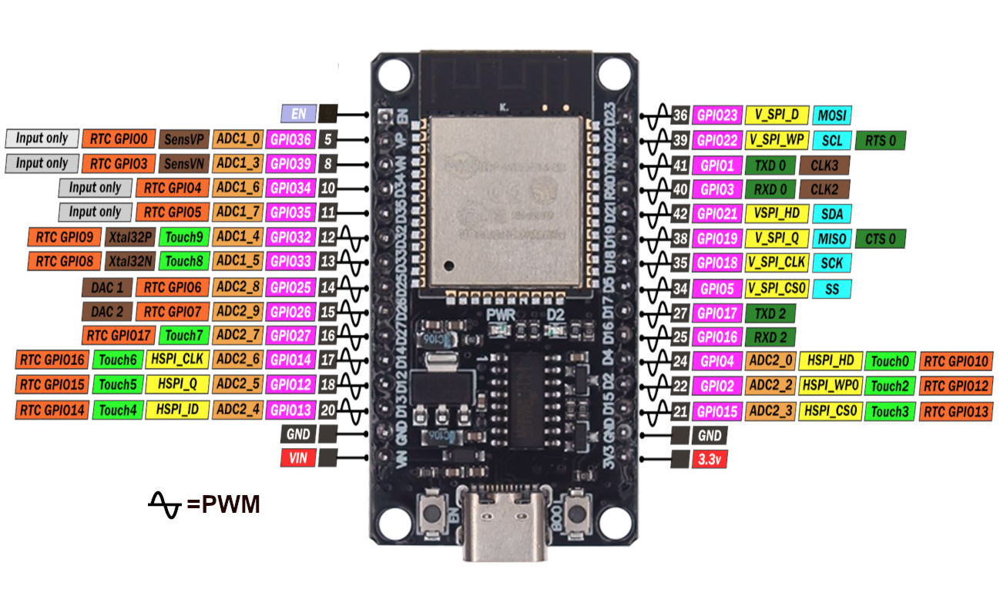
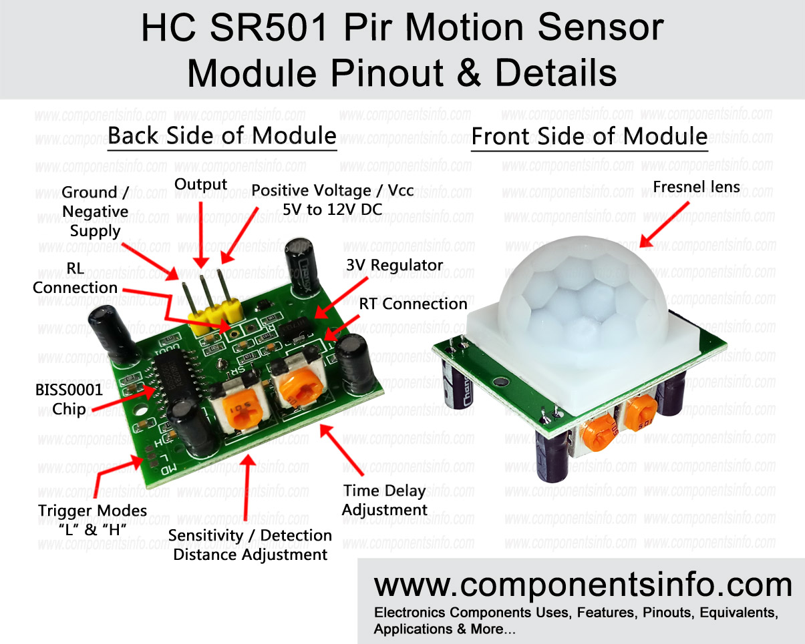
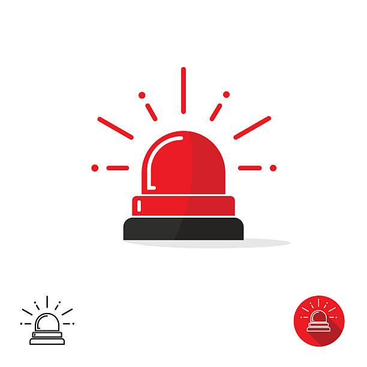
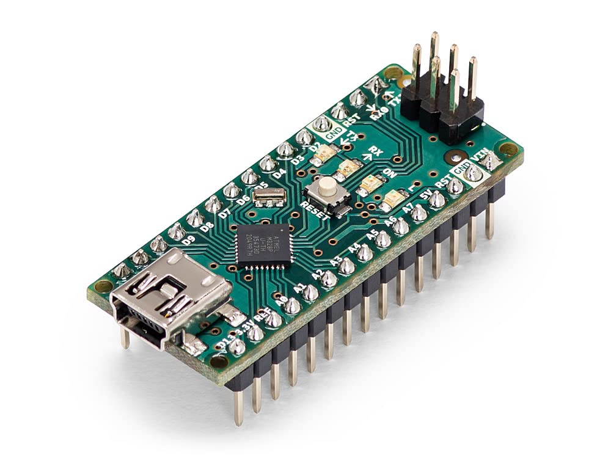

Hardware Sensors

ESP32 Development Board
A microcontroller with built-in Wi-Fi and Bluetooth capabilities.
Dual-Core Processor: running up to 240 MHz.
Wi-Fi and Bluetooth: 2.4 GHz Wi-Fi (802.11 b/g/n) and Bluetooth (v4.2 BR/EDR)
Interface: Digital

Motion Sensor (PIR HC-SR501)
Measures g-forces or sudden changes in movement.
Detection Range: Adjustable between 3 meters to 7 meters.
Trigger Time: Adjustable delay time, typically from 5 seconds to 5 minutes.
Field of View : Approximately 120° horizontal detection range.

Alert Mechanisms
Implemented to notify you when motion is detected, either via sound, light, or even by sending a notification
LED: For visual alerts (e.g., indicating hazardous conditions).
Buzzer: For audio alerts to catch the attention of drivers.
Display (optional): An OLED or LCD display to show real-time sensor data.
Software Tools

Arduino IDE
Custom-built software for real-time sensor data collection and processing.
Language: C++

ESP32 Board Package for Arduino
Must be installed in the Arduino IDE to support programming for ESP32.
URL: https://dl.espressif.com/dl/package_esp32_index.json
Package name: esp32 by Espressif Systems
Updates: Real-time
Networking Libraries
Robust system for storing and managing sensor data.
WiFi.h:For connecting the ESP32 to a Wi-Fi network.
HTTPClient.hFor sending HTTP requests to a web server.
PubSubClient.h (optional): For MQTT communication if used for real-time data transmission.